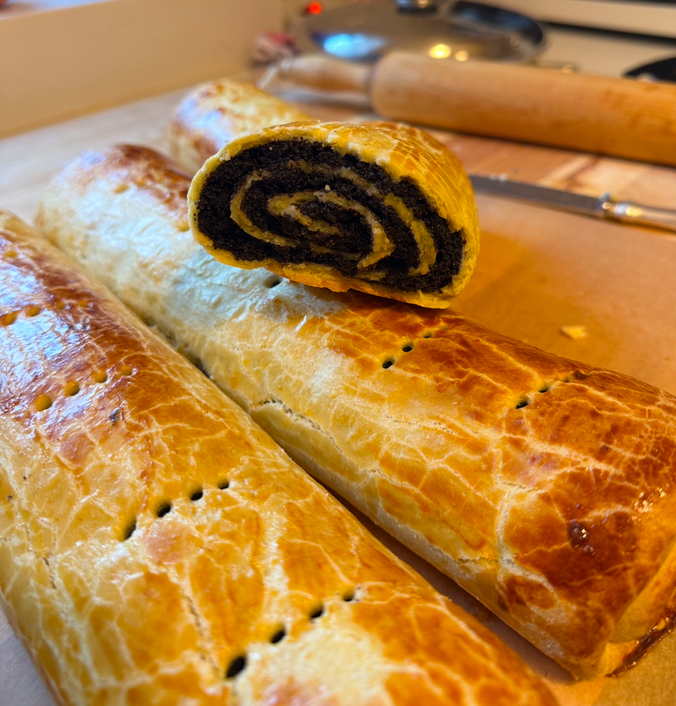

Growing up with a Hungarian grandma, bejgli was a must bake, especially around Christmas. I cannot describe how much nostalgia the smell of freshly baked bejgli awakens in me and I am endlessly grateful for my grandma for making me help her bake for our whole family year after year. Finally, I can proudly say my grandma approves of my bejgli baking skills and I will make it my duty to ensure this traditional recipe to be carried on to a future generations.